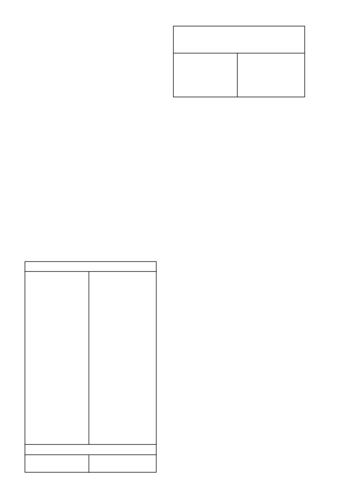

resultate. Indien reën wegbly vir langer as 2 weke kan sekere
onkruide ontkiem en sal swak of wisselvallige beheer verkry
word.
•
As gevolg van die lae adsorbsiekapasiteit van sandgronde (0 -
15% klei), kan onkruiddoders tot sub-letale vlakke in die boon-
ste 50 mm van die grondprofiel verlaag word na die voorkoms
van deurdringende reën (> 25 mm per dag) met gevolglike
verswakte onkruidbeheer. Aanhoudende reën (> 50 mm ver-
sprei oor 3 - 7 dae) sal ook lei tot verswakte onkruidbeheer en
moontlike gewasskade.
•
Moet nie
GESAPRIM 90 WG
toedien onder stremmings-
toestande nie. Byvoorbeeld: versuiptoestande, droogte, baie
koue toestande, oormatige reën, swak kunsmistoediening, lae
pH, ensovoorts. Swak beheer kan voorkom en gewasskade is
ook moontlik.
•
Lande wat gebrand is moet eers deeglik bewerk word voor-
dat
GESAPRIM 90 WG
daarop toegedien word. As op die
grondoppervlakte kan lei tot die inaktivering van toegediende
onkruiddoders wat swak resultate tot gevolg kan hê.
•
As gevolg van die verskuiwing van behandelde bogrond en
loging van
GESAPRIM 90 WG
op sandgronde kan sub-
optimale onkruidbeheer onder vloedbesproeiing verwag word.
•
Onder abnormale klimaatstoestande, soos byvoorbeeld oor-
matige reën en langdurige bewolkte toestande kort na plant,
kan skade tydens vroeë na-opkoms toedienings (1 - 3 blaar
van gewas) voorkom.
•
Indien GRAMOXONE by die spuitmengsel gevoeg word
(ge rigte bespuiting), moet die volgende omstandighede vermy
word:
a) Mielies onderworpe aan fisiologiese stremming.
b) Mielies met ‘n lae opbrengspotensiaal.
c) Winderige toestande.
d) Lande met ‘n ongelyke oppervlakte.
•
Onder koue en/of baie nat toestande kan
GESAPRIM 90 WG
graansorghum beskadig.
5. ONKRUIDE WAT BEHEER WORD
Die volgende onkruidsoorte word normaalweg deur ‘n voorop-
komtoediening van
GESAPRIM 90 WG
beheer teen die toe-
dieningshoeveelhede soos hieronder aanbeveel.
Breëblaaronkruide
Acanthospermum australe
agtsadige kruipsterklits
Acanthospermum glabratum
vyfsadige kruipsterklits
Acanthospemum hispidum
regopsterklikts
Amaranthus deflexus
meerjarige misbredie
Amaranthus hybridus
gewone misbredie
Amaranthus spinosus
doringmisbredie
Amaranthus thunbergii
rooimisbredie
Bidens bipinnata
Spaanse knapsekêrel
Bidens pilosa
knapsekêrel
Chenopodium album
withondebossie
Chenopodium carinatum
groenhondebossie
Cleome monophylla
rusperbossie
Cleome rubella
mooinooientjie
Commelina benghalensis
Bengaalse wandelende
Jood
Cosmos bipinnatus
kosmos
Crotalaria sphaerocarpa
mielie-Crotalaria
Datura ferox
grootstinkblaar
Datura stramonium
stinkblaar
Galinsoga parviflora
knopkruid
Gisekia pharnaceoides
Gisekia
Hibiscus cannabinus
wildestokroos
Hibiscus trionum
terblansbossie
Nicandra physaloides
basterappelliefie
Physalis angulata
wilde-appelliefie
Portulaca oleracea
porslein
Richardia brasiliensis
tropiese Richardia
Schkuhria pinnata
kleinkakiebos
Tagetes minuta
kakiebos
Vigna vexillata
wilde-akkerboontjie
Grassoorte
Eleusine indica
jongosgras
Setaria pallide-fusca
rooiborselgras
Indien droë weerstoestande voortduur vir ‘n tydperk van 7
tot 14 dae na ‘n vooropkombespuiting mag die volgende
on kruidsoorte nie na wense beheer word nie, veral op
swaarder gronde.
Cosmos bipinnatus
kosmos
Commelina benghalensis
Bengaalse wandelende
Jood
Datura
spp
.
Bengaalse wandelende
Jood
Eleusine indica
jongosgras
Tagetes minuta
kakiebos
Onder abnormale toestande mag die laat seisoenbeheer nie na
wense wees nie.
6. GEBRUIKSAANWYSINGS
Gebruik slegs soos aanbeveel
6.1 VERENIGBAARHEID
Die verenigbaarhied van
GESAPRIM 90 WG
met ander produkte
kan beïnvloed word deur die formulasie van die betrokke produkte
asook deur die kwaliteit van die water. Aangesien die formulasie
van produkte kan verander sonder die medewete van Syngenta
en die kwaliteit van die water ook van plaas tot plaas kan varieer,
moet ‘n fisiese verenigbaarheidstoets altyd uitgevoer word voor-
dat gespuit word.
GESAPRIM 90 WG
is verenigbaar met DUAL GOLD (L5749),
GRAMOXONE
®
(L1174) en CAMPATOP
®
225 EC, (L5320) soos
op hierdie etiket aanbeveel. Dit is ook verenigbaar met grond-
insektemiddels.
6.2 MENGINSTRUKSIES
Maak die spuittenk halfvol met water en voeg dan die nodige
hoeveelheid
GESAPRIM 90 WG
deur ‘n 50 maas sif by terwyl
geroer word. Vul die tenk verder met water totdat die verlangde
volume verkry is.
Wanneer
GESAPRIM 90 WG
in ‘n tenkmengsel saam met
GRAMOXONE en/of CAMPATOP 225 EC gebruik word, moet
die
GESAPRIM 90 WG
eerste met ‘n half-tenk water vermeng
en goed geroer word waarna die spuittenk feitlik geheel en al met
water gevul moet word. Daarna moet eerstens die CAMPATOP
225 EC en laaste die GRAMOXONE bygevoeg word terwyl daar
tot die finale volume opgevul word.
Maak seker dat die mengsel aanhoudend deeglik geroer word
tydens vulling en toediening.
6.3 TOEDIENINGSTEGNIEKE
GESAPRIM 90 WG
moet toegedien word
voor of net nadat die
onkruid opgekom het. Die grond moet verkieslik ‘n egalige opper-
vlakte hê, sonder groot kluite.
Indien droë weerstoestande vir ‘n periode van 7 tot 14 dae na
toediening voortduur, mag onkruid opkom en ontwikkel. Waar dit
gebeur, word aanbeveel dat ‘n ligte bewerking met ‘n roltandeg
uitgevoer word om hierdie onkruid te vernietig en die onkruid-
doder met die boonste 10 tot 20 mm grondlaag te vermeng.
GESAPRIM 90 WG
kan ook toegedien word as ‘n gerigte
tussen ry bespuiting in ‘n tenkmengsel saam met GRA MOXONE
®
.
Die mielies moet minstens 30 cm hoog wees om te verseker dat
die spuitmengsel effektief gerig kan word. Die onkruide moet nie
groter as 10 cm wees nie om doeltreffende beheer te verseker.
Vir meer inligting raadpleeg die GRA MOXONE
®
etiket.
6.3.1 Grondtoediening
GESAPRIM 90 WG
kan toegedien word met enige konfensionele
medium- of hoëvolume spuittoerusting wat met ‘n doeltreffende
roermega nisme toegerus is, en wat goeie bedekking en ewere-
dige verspreiding verseker. Die beste resultate word verkry deur
GESAPRIM 90 WG
/ 2
